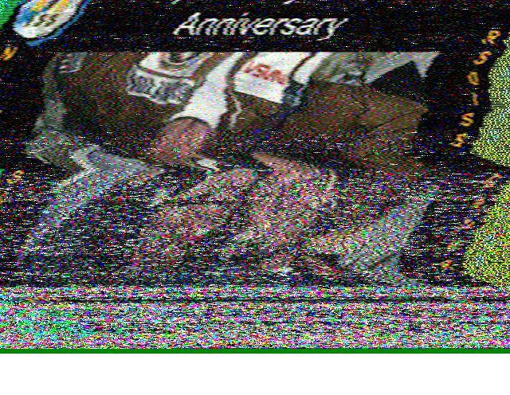
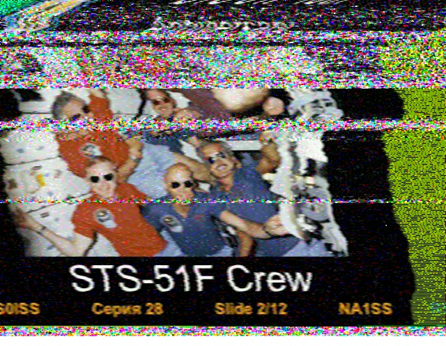

Every few months, the International Space Station hosts an amateur radio broadcasting event. The event is usually hosted by ARISS (Amateur Radio ISS) commemorating a past event or milestone.
Images are transmitted as an SSTV Protocol (Slow Scan Television) and anyone can recieve the signal and decode it to produce an image.
Using my existing antenna from my NOAA Weather Imaging project, I was able to recieve images from the ISS over the course of July 14-18. I recorded the signal on 148.5Mhz as the ISS passed over head and decoded them through a software called MMSSTV using "PD120" protocol. Events are usually announced on this website (https://www.ariss.org/upcoming-sstv-events.html).
 

I used N2YO.com to track the ISS. It's pretty neat to think there are people orbiting high above my head and I am able to know exactly when I have line of sight to them.
Return to main